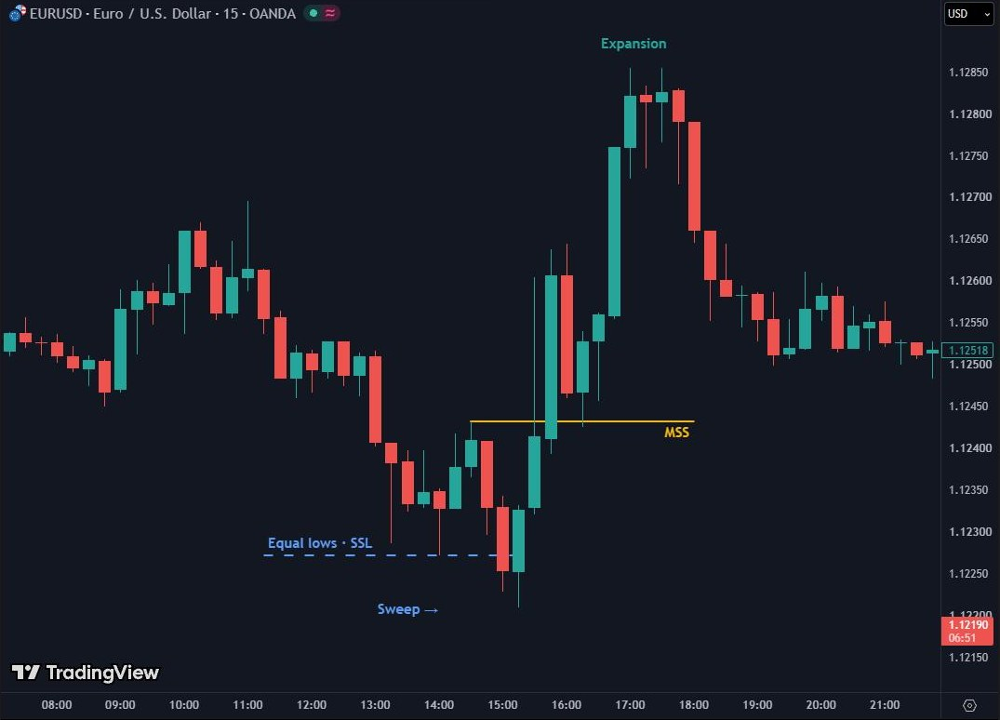
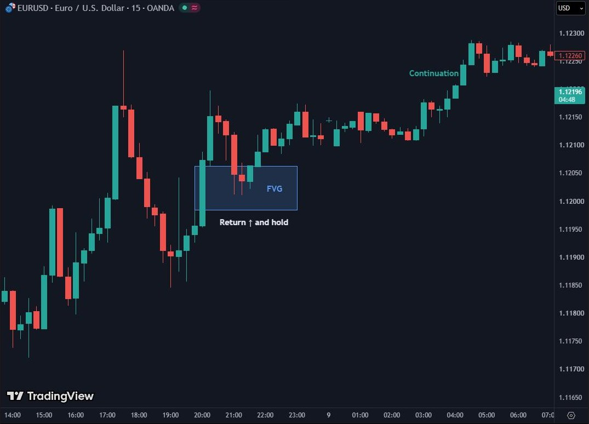

Ликвидност и SMC зони
Ако седиш на покер маса и след половин час не знаеш кой е балъкът, балъкът си ти. Стара покер поговорка, популяризирана от Уорън Бъфет
След тази глава ще можеш
- да посочиш къде стоят стоповете на графиката: BSL, SSL, равни върхове и дъна, Азия, PDH, PDL;
- да начертаеш order block и Fair Value Gap и да кажеш коя зона е по-силна;
- да разделиш диапазона на скъпа и евтина половина (premium и discount).
●7.1 Къде стоят стоповете
Ако следваш бързия път, тази глава е от Етап 4. Първо мини първия си бектест с прост сетъп, после използвай идеите тук като филтри, които тестваш един по един (0.3.8).
В Глава 0.2 видя, че цената се движи там, където има поръчки. Най-голямата купчина поръчки на всяка графика са стоповете на другите трейдъри. Всеки, който е продал, има стоп над някакъв връх. Всеки, който е купил, има стоп под някакво дъно. Стопът на продавача е поръчка за покупка; стопът на купувача е поръчка за продажба.
| Ликвидност | Къде | Чии поръчки |
|---|---|---|
| BSL (buy-side) | Над върхове | Стопове на продавачите + поръчки за пробив нагоре = поръчки за покупка |
| SSL (sell-side) | Под дъна | Стопове на купувачите + поръчки за пробив надолу = поръчки за продажба |
| Равни върхове / дъна | Два-три върха на една цена | Най-очевидното място за стоп, затова най-привлекателната цел |
| Азиатски диапазон | Върхът и дъното на нощната сесия | Стопове на всички, търгували нощта |
| PDH / PDL | Върхът и дъното на предния ден | Ежедневни цели за Лондон и Ню Йорк |
Голям играч, който иска да купи милиард евро, има нужда от някой, който да му продаде милиард. Къде ще намери толкова продавачи наведнъж? Под очевидното дъно, където хиляди стопове на купувачите ще се превърнат в поръчки за продажба. Затова цената толкова често първо прави фалшиво движение към ликвидността и чак после тръгва в истинската посока.
●7.2 Sweep: взимането преди истинското движение
Sweep (обиране) е бързо движение отвъд ниво с ликвидност, последвано от връщане. На графиката изглежда като фитил над върха или под дъното, а свещта затваря обратно вътре. Това е най-честият начин, по който започват истинските движения.

Стопът ти не е тайна. Той е там, където всеки би го сложил. Ако искаш да оцелееш, слагай го там, където сценарият ти е грешен, а не там, където е удобно.
●●7.3 Order block и Fair Value Gap
Order block (OB) е последната свещ в обратна посока преди силно движение. Bullish (бичи) OB е последната червена свещ преди силния ход нагоре; bearish (мечи) OB е последната зелена свещ преди силния ход надолу. Идеята: там големият играч е натрупал позицията си. Когато цената се върне, той често я защитава. Правило от практиката: решенията в OB се взимат в долните 75% на свещта (за bullish), не в горния ѝ край, защото оттам стопът под зоната е най-далеч и съотношението печалба към риск се влошава.
Fair Value Gap (FVG) е дисбалансът от Глава 0.2, измерен точно. Взимаш три поредни свещи. Ако фитилът на първата и фитилът на третата не се застъпват, празното място между тях е FVG. Цената е минала оттам толкова бързо, че почти не е имало сделки. Пазарът често се връща да го „запълни“.

POI (Point of Interest) е общото име на всяка зона, в която очакваш реакция. Не всички са равни. Подредбата в тази книга, от най-силната към най-слабата:
- OB и FVG, които се застъпват. Две причини на едно място.
- OB, образуван след sweep. Ликвидността е взета, позицията е натрупана.
- Чист FVG в правилната половина на диапазона.
- Ниво с ликвидност плюс структурно ниво (S/R от Глава 4).
●●7.4 Premium и discount: скъпо и евтино
Вземи последното голямо движение, от SSL до BSL. Това е диапазонът на сделките (dealing range). Средата му, 50%, е equilibrium (равновесие). Горната половина е premium (скъпо): там е по-логично да се търсят продажби. Долната половина е discount (евтино): там е по-логично да се търсят покупки. Купуването в premium значи, че плащаш скъпо и стопът ти е далеч.
Типичната последователност в диапазон е: sweep на SSL → изкачване → sweep на BSL → обръщане, или обратното. Цената „диша“ между двете ликвидности.
Купувай, когато цената пада много, защото е евтино.
„Евтино“ има смисъл само в контекст: discount на диапазон в bullish тренд, след взета ликвидност. Без контекст „евтино“ може да стане много по-евтино.
●●7.5 Повторение кадър по кадър
Тук всичко от главата се случва на една графика: ликвидност, sweep, MSS, FVG, вход, стоп и цел на 3R. Пусни го, после го мини стъпка по стъпка и си кажи на глас какво виждаш, преди да натиснеш „Напред“.
Тренировка
Натисни линията на графиката или бутона с буквата. Имаш един опит за всеки въпрос.
Сега на живо
Намери на M15 равни върхове или равни дъна и отбележи къде би бил sweep-ът. После провери след няколко часа какво се е случило.
ЗадълбочиКакво всъщност е лов на стопове
Никой в банката не гледа твоя стоп. Големите играчи виждат къде вероятно се трупат поръчки: над равни върхове, под кръгли числа, отвъд вчерашния връх. Интересува ги, защото им трябва ликвидност: фонд, който иска да купи 500 милиона евро, не може да го направи на една цена, освен ако много хора не продават в същия момент. Задействаните стопове за продажба са точно това.
Така че „ловът“ обикновено не е заговор. Това е голяма поръчка, която търси другата страна, плюс краткосрочни трейдъри, които знаят къде са стоповете и бутат цената натам, защото изпълнението е сигурно. Изключението е B-book брокер, който наистина вижда стоповете на клиентите. Още една причина да знаеш модела на брокера си.
Какво значи това за теб: стоп точно там, където са стоповете на всички, ще бъде изпълнен при sweep-а. Сложи го там, където идеята ти е грешна, отвъд очевидния басейн, и намали размера, за да остане рискът 1%.
Какво взимаш от Досие 07
- Ликвидността е над върховете (BSL) и под дъната (SSL). Равните върхове и дъна са най-силните магнити.
- Sweep е фитил отвъд ликвидността със затваряне обратно; често е началото на истинското движение.
- OB е последната обратна свещ преди импулса. FVG е празнината между свещ 1 и свещ 3.
- Сила на POI: OB+FVG > OB след sweep > чист FVG > ниво + ликвидност.
- Купувай в discount, продавай в premium, винаги в контекста на по-високия таймфрейм.
Чеклист преди следващата глава
Провери се
Лесно · 5 въпроса
Средно · 3 въпроса
Ниво Experienced Trader · 1 сценарий
Няма единствен верен отговорEURUSD H1, D1 е bullish. Диапазон: SSL 1.0780, BSL 1.0900. Азия е между 1.0812 и 1.0830. В Лондон цената пада до 1.0806 и затваря обратно над 1.0812, после прави силна зелена свещ, която оставя FVG между 1.0818 и 1.0824. Последната червена свещ преди нея е 1.0809–1.0815.
Задача: назови sweep-а, OB и FVG. В коя половина на диапазона сме? Коя е най-силната зона за наблюдение, ако цената се върне? Къде е следващата ликвидност нагоре?
- Sweep на SSL на Азия: фитил до 1.0806, затваряне над 1.0812.
- OB: последната червена свещ, 1.0809–1.0815. FVG: 1.0818–1.0824. Те не се застъпват, но са близо; OB е след sweep, което го прави по-силен.
- Equilibrium на диапазона: (1.0780 + 1.0900) ÷ 2 = 1.0840. Цената е под него: discount. В bullish D1 това е логичното място за наблюдение на покупки.
- Най-силна зона: OB след sweep (1.0809–1.0815), долните 75% от нея. Сценарият е обезсилен при затваряне под дъното на sweep-а (1.0806).
- Ликвидност нагоре: върхът на Азия 1.0830, после BSL 1.0900.